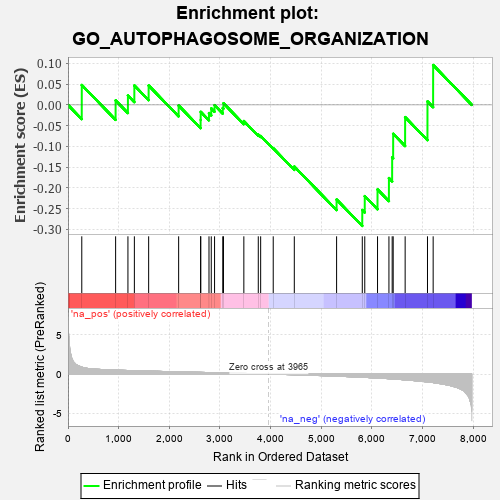
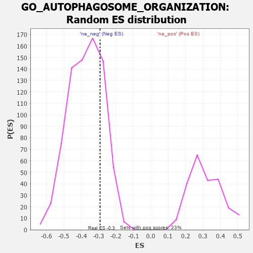

| | | Dataset | 7d |
| Phenotype | NoPhenotypeAvailable |
| Upregulated in class | na_neg |
| GeneSet | GO_AUTOPHAGOSOME_ORGANIZATION |
| Enrichment Score (ES) | -0.29171833 |
| Normalized Enrichment Score (NES) | -0.78166664 |
| Nominal p-value | 0.7718383 |
| FDR q-value | 0.9962891 |
| FWER p-Value | 1.0 |
Table: GSEA Results Summary

Fig 1: Enrichment plot: GO_AUTOPHAGOSOME_ORGANIZATION
Profile of the Running ES Score & Positions of GeneSet Members on the Rank Ordered List
| PROBE | GENE SYMBOL | GENE_TITLE | RANK IN GENE LIST | RANK METRIC SCORE | RUNNING ES | CORE ENRICHMENT | | 1 | ULK1 | | | 272 | 0.875 | 0.0480 | No |
| 2 | STX17 | | | 940 | 0.497 | 0.0108 | No |
| 3 | EMC6 | | | 1183 | 0.449 | 0.0226 | No |
| 4 | ATG12 | | | 1310 | 0.427 | 0.0468 | No |
| 5 | NPRL3 | | | 1592 | 0.375 | 0.0467 | No |
| 6 | NPRL2 | | | 2184 | 0.278 | -0.0015 | No |
| 7 | WIPI2 | | | 2618 | 0.210 | -0.0363 | No |
| 8 | BAG3 | | | 2620 | 0.209 | -0.0168 | No |
| 9 | SCFD1 | | | 2783 | 0.185 | -0.0197 | No |
| 10 | BECN1 | | | 2828 | 0.179 | -0.0084 | No |
| 11 | MTM1 | | | 2893 | 0.168 | -0.0007 | No |
| 12 | FEZ1 | | | 3055 | 0.142 | -0.0076 | No |
| 13 | ATG9A | | | 3069 | 0.141 | 0.0040 | No |
| 14 | ATG3 | | | 3471 | 0.081 | -0.0389 | No |
| 15 | ATG2B | | | 3756 | 0.033 | -0.0716 | No |
| 16 | VMP1 | | | 3803 | 0.027 | -0.0748 | No |
| 17 | ATG5 | | | 4051 | -0.016 | -0.1045 | No |
| 18 | LRRK2 | | | 4467 | -0.087 | -0.1485 | No |
| 19 | RAB7A | | | 5302 | -0.271 | -0.2280 | No |
| 20 | MTMR3 | | | 5809 | -0.408 | -0.2533 | Yes |
| 21 | ATG7 | | | 5858 | -0.420 | -0.2198 | Yes |
| 22 | ATG13 | | | 6110 | -0.508 | -0.2037 | Yes |
| 23 | IFT88 | | | 6335 | -0.590 | -0.1764 | Yes |
| 24 | RALB | | | 6399 | -0.617 | -0.1263 | Yes |
| 25 | RAB43 | | | 6419 | -0.628 | -0.0696 | Yes |
| 26 | RAB5A | | | 6655 | -0.741 | -0.0295 | Yes |
| 27 | RAB1A | | | 7096 | -0.993 | 0.0084 | Yes |
| 28 | MFN2 | | | 7208 | -1.081 | 0.0960 | Yes |
Table: GSEA details [plain text format]

Fig 2: GO_AUTOPHAGOSOME_ORGANIZATION: Random ES distribution
Gene set null distribution of ES for GO_AUTOPHAGOSOME_ORGANIZATION